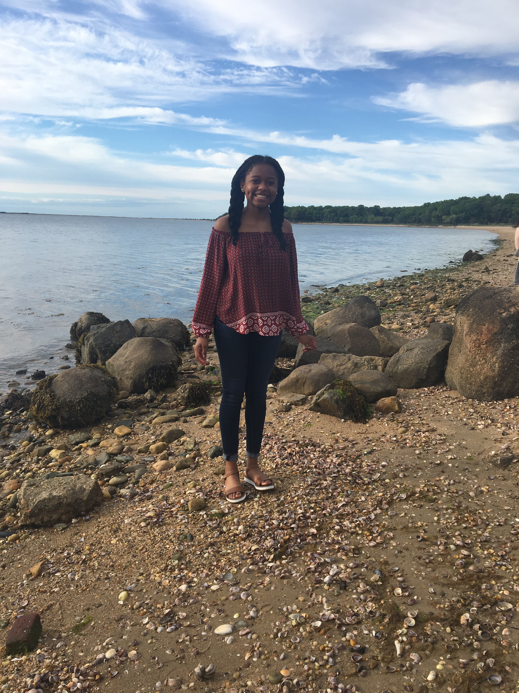
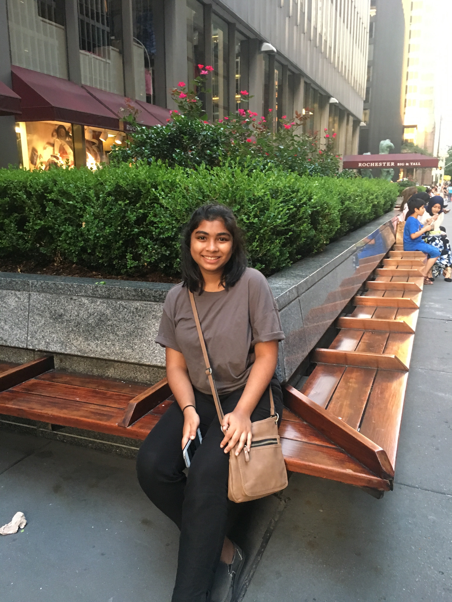

Meet The Team
Tierra Buissereth

My name is Tierra Buissereth. I am a rising junior at Scotch Plains Fanwood High School in Scotch Plains, NJ. At school, I am a member of the marching band and the Vice President of French Club. In my free time I like to watch TV, read the news, listen to music, and educate myself on social justice matters. During this past summer, I was given the opportunity to participate in the Girls Who Code Summer Immersion Program. Through the program I learned several coding languages and how to use coding for good.
tierra.sylvia@gmail.com
Stefanie Donayre

Hi I'm Stefanie! In short, I am a writer, talk show lover, and alien advocate. I am a rising junior at Susan E. Wagner High School in Staten Island, NY. In my free time I really enjoy playing the guitar, going to concerts, and listening to music. I am a junior varsity cheerleader at my school and publicist of my school's Key Club as well as a member of the National Honor Society. I aspire to be a broadcast journalist and am beyond greatful to have attended a program with such a powerful mission like Girls Who Code.
donayre.stefanie@yahoo.com
Aurpita Shafi

I am Aurpita Shafi, and I am a rising junior at Mainland Regional High School in Linwood, NJ. I am really interested in politics.
I also really enjoy volunteering with my friends, so I am in Interact Club and Key Club. I am also in Spanish Club. I am also a member of
the Society of Young Muslim Women. In my free time, I enjoy watching telenovelas on Netflix, and taking naps. Before this program, I found
computer science a little boring, and didn't really see any flexibility with it, but after this program, I have seen that it is an
incredibly diverse field, and I hope to go further with this, and see the difference I can make with it. aurpitas123@gmail.com